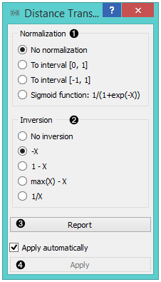
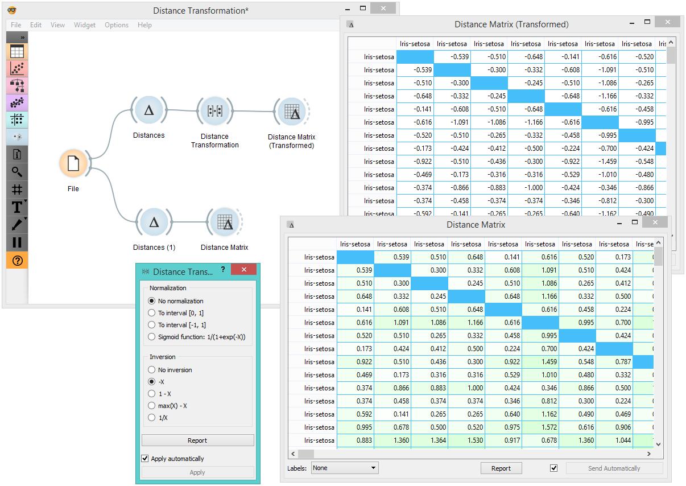

Distance Transformation
Transforms distances in a dataset.
Inputs
- Distances: distance matrix
Outputs
- Distances: transformed distance matrix
The Distances Transformation widget is used for the normalization and inversion of distance matrices. The normalization of data is necessary to bring all the variables into proportion with one another.

- Choose the type of Normalization:
- No normalization
- To interval [0, 1]
- To interval [-1, 1]
- Sigmoid function: 1/(1+exp(-X))
- Choose the type of Inversion:
- No inversion
- -X
- 1 - X
- max(X) - X
- 1/X
- Produce a report.
- After changing the settings, you need to click Apply to commit changes to other widgets. Alternatively, tick Apply automatically.
Example
In the snapshot below, you can see how transformation affects the distance matrix. We loaded the Iris dataset and calculated the distances between rows with the help of the Distances widget. In order to demonstrate how Distance Transformation affects the Distance Matrix, we created the workflow below and compared the transformed distance matrix with the “original” one.
